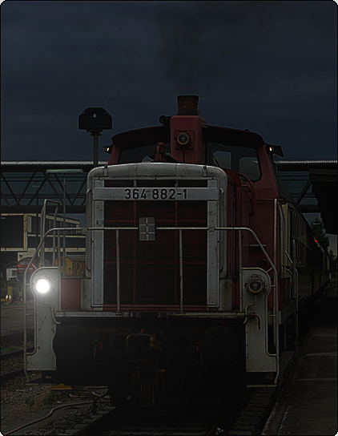

Signalbuch-Online
Signal Fz 1 – Rangierlokomotivsignal
Informationen zur Kennzeichnung von Lokomotiven und Nebenfahrzeugen im Rangierdienst.
(1)
Bedeutung
Kennzeichnung einer Lokomotive im Rangierdienst.
(2)
Beschreibung
Tageszeichen: Kein besonderes Signal.
Nachtzeichen: Vorn und hinten ein weißes Licht, in Höhe der Puffer.

Stattdessen kann auch das Signal Zg 1a geführt werden; es muss geführt werden, wenn Bahnübergänge ohne technische Sicherung oder ohne Sicherung durch Posten befahren werden.
(3)
Hinweis
Das Signal wird auch geführt von Nebenfahrzeugen im Rangierdienst.
(4)
Bahnübergänge
Wenn beim Rangieren Bahnübergänge ohne technische Sicherung oder ohne Sicherung durch Posten befahren werden müssen, wird das Signal Zg 1a auch bei Tage geführt.